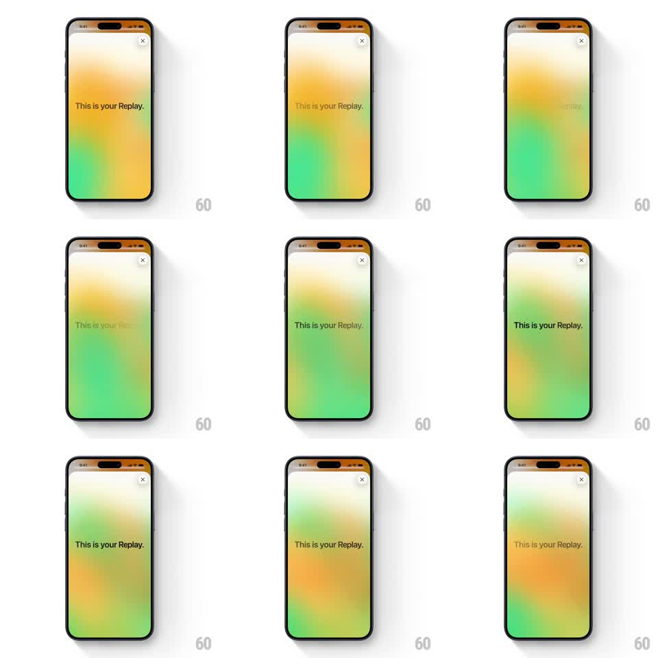

Media
Frame-by-frame

Rebuild this animation 1:1: Apple Music Replay '25 loading state - "This is your Replay." pulsing softly in opacity over a slowly shifting orange-to-green aurora gradient.

Rebuild this animation 1:1: Apple Music Replay '25 loading state - "This is your Replay." pulsing softly in opacity over a slowly shifting orange-to-green aurora gradient. ## Integration Integration: stack-agnostic spec - springs given as stiffness/damping, timed motions as duration + curve; map every value to your framework and animation library of choice. ## Scene Full-bleed blurred gradient field blending warm orange/yellow at the top into greens at the bottom (heavy gaussian blur, no hard shapes). A small circular close (x) button floats top-right on a frosted chip. Centered headline "This is your Replay." in dark text. ## Motion spec Pattern: ambient loading pulse, indefinite loop. - Text pulse: headline opacity breathes 1 -> 0.25 -> 1 on a ~1.6s cycle, ease-in-out both ways. - Background drift: the gradient blobs slowly translate and cross-fade (orange region slides down as green rises), one full cycle ~8s, linear-ish with soft easing. - No other elements move; the close button is static. ## Calibration - The pulse is subtle - never drop below ~0.25 opacity or it reads as a flicker. - Keep the gradient out of focus; sharp color bands break the loading mood. ## Reduced motion Static gradient, headline at full opacity; show a standard progress indicator instead of the pulse. ## Don't miss - This is a loading placeholder, not a hero - no entrance choreography, it simply breathes. - Text stays perfectly centered through the pulse; only opacity animates.